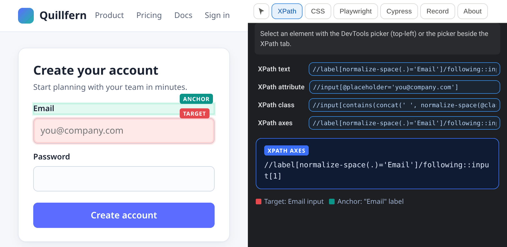
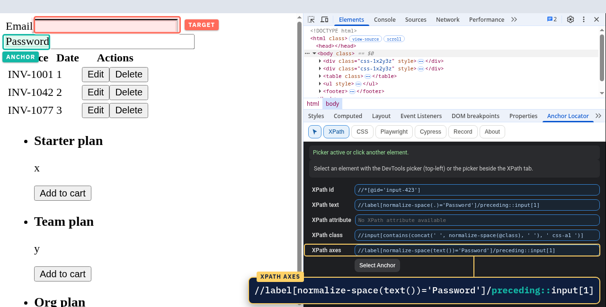
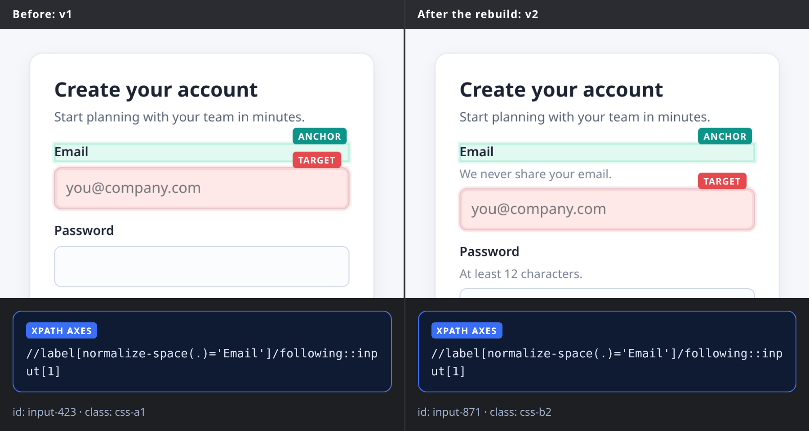
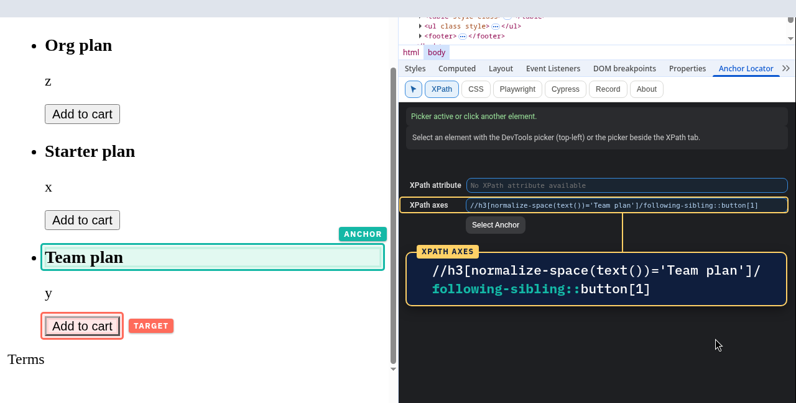
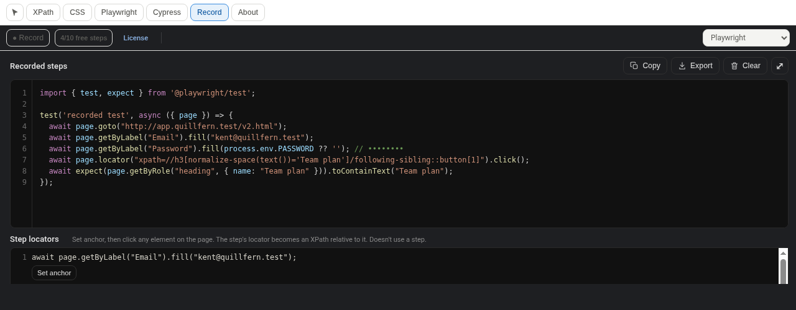

Anchor to what doesn't change.
Anchor Locator lets you build locators from the element you trust. Pick any stable element on the page as your anchor, and get readable XPath that keeps working when IDs and classes change.
- Page data never leaves your browser
- No ads
- No tracking
Pick the target. Then pick any element as the anchor.
You know which parts of your app stay stable. Anchor Locator lets you make the call, then writes the XPath axes between the two elements for you.
Click your target TARGET
Open Anchor Locator in DevTools and click the element your test needs.
Click your anchor ANCHOR
Pick any element on the page as the anchor. A stable one near the target or related to it works best: a field label, a card title, a heading.
Copy your locator
Get readable, axes-based XPath. Or record the whole flow with the Recorder and export it to Playwright, Selenium or Cypress.
Built on what users see.
Locators lean on visible, meaningful elements instead of generated IDs and hashed classes. Click the Email field, then its label, and you get:
following::input[1]means the first input after the label, so an extra wrapper div or inserted hint text doesn't break it.normalize-space()ignores stray whitespace and line breaks in the label text.

Re-pick the anchor, get a new locator.
Not happy with the anchor? Pick a different one. Same Email field, but anchored on the "Password" label this time, so the XPath walks backwards with preceding:::
- Following, preceding, sibling and ancestor relationships are built for you instead of typed by hand and re-tested in the console.
- You see the exact XPath, so you can commit it, review it and own it.

Your UI changed. Your locator didn't need to.
On our demo page, the next build regenerates IDs (input-423 becomes input-871), adds a wrapper and inserts hint text between the label and the field. The ID locator finds nothing. The label-anchored XPath still finds the Email field.
- Same axes XPath, same field, both versions.
- Check it yourself with
$x()in the DevTools console.

Identical buttons, one meaningful anchor.
Three cards, three "Add to cart" buttons. An index like (//button[normalize-space(.)='Add to cart'])[2] points at whatever ends up second. Anchor on the card title instead, and the locator follows the card when they're reordered:

Locators you can read, review and trust
You choose the anchor
Click your target, then any element as the anchor. You know what stays stable in your app.
Axes-based XPath
following::, following-sibling::, preceding:: and ancestor:: with normalize-space(), generated for you.
Deterministic and readable
The XPath says exactly what it does. Nothing changes behind your back.
Recorder with assertions
Capture a flow, including visible, text, value and attribute assertions.
Export to your framework
Playwright (TypeScript), Selenium (Java, Python, C#) and Cypress.
Private by design
Runs locally. Page data never leaves your browser. No ads, no tracking, no analytics.
Record a flow. Export a script.
Record a flow, including assertions (visible, text, value, attribute), and export it to Playwright, Selenium or Cypress. Each export follows its framework's conventions:
- Selenium uses axes-based XPath.
- Playwright uses its built-in
getBy…locators with an XPath fallback. - Cypress uses CSS selectors through
cy.getandcy.contains, with no plugin to install.
Try it free for 10 recorded steps, with every Recorder feature and all three export formats included. Pro unlocks unlimited steps.

Free for every locator feature
Only the Recorder has a limit. Try it with 10 free steps, then go Pro for unlimited recording.
Free
Everything you need to build locators.
- Free-select anchor: any element
- Axes-based XPath generation
- Recorder: 10 free steps (lifetime total)
- Assertions included (they count as steps)
- Export to Playwright, Selenium and Cypress
- Everything you record stays exportable
Pro Monthly
Unlimited Recorder steps, cancel any time.
- Everything in Free
- Unlimited Recorder steps
- Up to 3 browsers per license
- Works offline up to 7 days between license checks
- 14-day refund, no questions asked
Pro Lifetime
Pay once, every future Pro feature included.
- Everything in Pro Monthly
- One payment, about six months of the monthly price
- Every future Pro feature included
- 14-day refund, no questions asked
| Compare plans | Free | Pro |
|---|---|---|
| Price | $0 | $8/month or $49 lifetime |
| Free-select anchor (any element) | ✓ | ✓ |
| Axes-based XPath | ✓ | ✓ |
| Recorder steps | 10 free steps (lifetime total) | Unlimited |
| Assertions (visible, text, value, attribute) | ✓ count as steps | ✓ |
| Export to Playwright, Selenium, Cypress | ✓ included | ✓ |
| Everything you've recorded stays exportable | ✓ | ✓ |
| Future Pro features | n/a | ✓ Lifetime includes every future Pro feature |
| Refunds | n/a | Within 14 days, no questions asked |
| Works offline | ✓ | Up to 7 days between license checks |
| Browsers | No limit | Up to 3 browsers per license |
| No ads, no tracking | ✓ | ✓ |
Questions, answered
Is it really free?
Yes. Every locator feature is free, including free-select anchor and axes-based XPath. The Recorder comes with 10 free steps to try it, with export to Playwright, Selenium and Cypress included. Pro unlocks unlimited Recorder steps.
What happens after the 10 free Recorder steps?
The 10 free steps are a lifetime total, not a per-recording allowance, and the count doesn't reset between recordings. Once you've used them, the Recorder stops adding new steps. Everything you've recorded stays in the extension and can still be exported to Playwright, Selenium or Cypress. All locator features keep working as normal. Upgrade to Pro for unlimited Recorder steps.
What counts as a step?
Each action you record counts as one step, like a click, filling a field or choosing an option. Assertions (element visible, text, value, attribute) count as steps too. After 10 steps, recording new steps needs Pro.
Monthly or lifetime: which should I pick?
$8/month suits trying Pro on a project, and you can cancel any time. $49 lifetime is one payment, about six months of the monthly price. Lifetime includes every future Pro feature.
Can I get a refund?
Yes. Full refund within 14 days of purchase, no questions asked, on both Pro plans. See the refund policy.
How is payment handled?
Payments are handled by Lemon Squeezy, our merchant of record, so your payment details go to Lemon Squeezy and never to us. After checkout you activate Pro in the extension with your license key.
What happens to my recordings if Pro ends?
You keep them, and everything you've recorded stays exportable. New steps need an active Pro plan.
Which frameworks can I export to, and what locators do they use?
Playwright (TypeScript), Selenium (Java, Python, C#) and Cypress. Each export follows its framework's conventions. Selenium uses axes-based XPath. Playwright uses its built-in getBy… locators with an XPath fallback. Cypress uses CSS selectors through cy.get and cy.contains, so there's no XPath plugin to install. The Recorder picks its locators automatically. Free-select anchor is in the locator panel.
What about privacy?
The extension runs locally and page data never leaves your browser. There are no ads, no tracking and no analytics. The only network call is a license check with Lemon Squeezy, and only for Pro users. Details are in the privacy policy.
Why does it ask for access to all sites?
The extension requests scripting, storage and access to all sites. All-sites access is what lets it build locators and record on whichever page you're testing, since that could be any URL. Storage keeps your recordings and settings in your browser (the free-step counter also syncs through Chrome Sync, if you use it).
Playwright recommends role-based locators. Why XPath?
When role and test-id locators are available, use them (Playwright exports from the Recorder do). The locator panel is for when they aren't: icon buttons with no text, clickable divs, vendor widgets, and apps without test IDs.
How do I get help?
Email kedveneilrabe@gmail.com and we'll get back to you.
Pick the anchor. Keep the locator.
Anchor Locator is free on Chrome. Page data never leaves your browser. No ads.